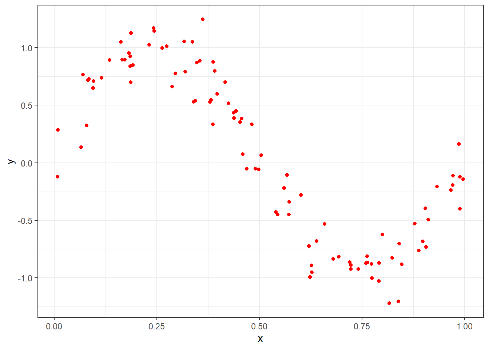
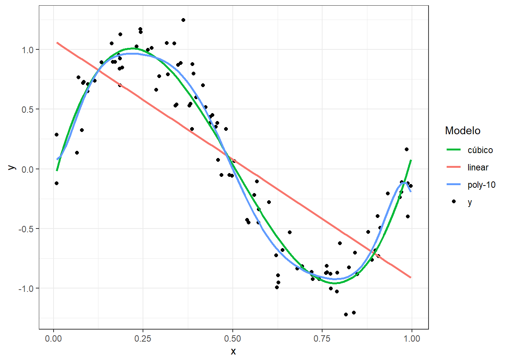
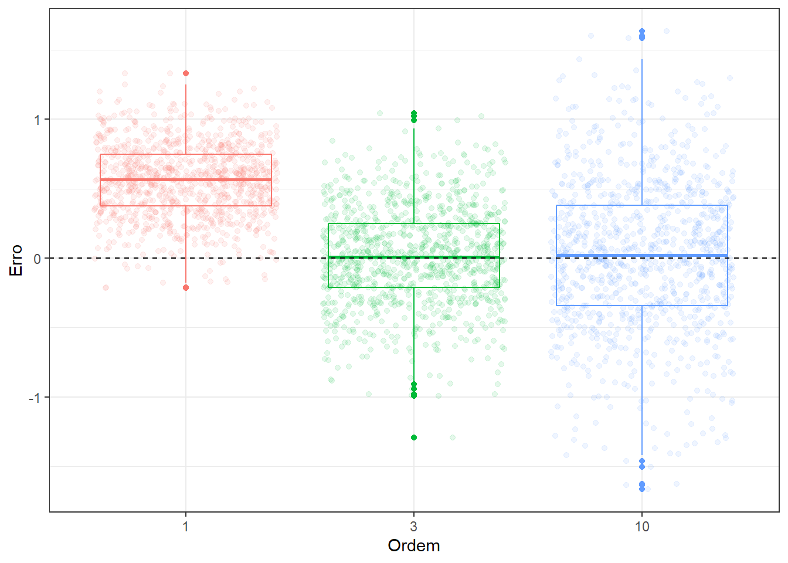
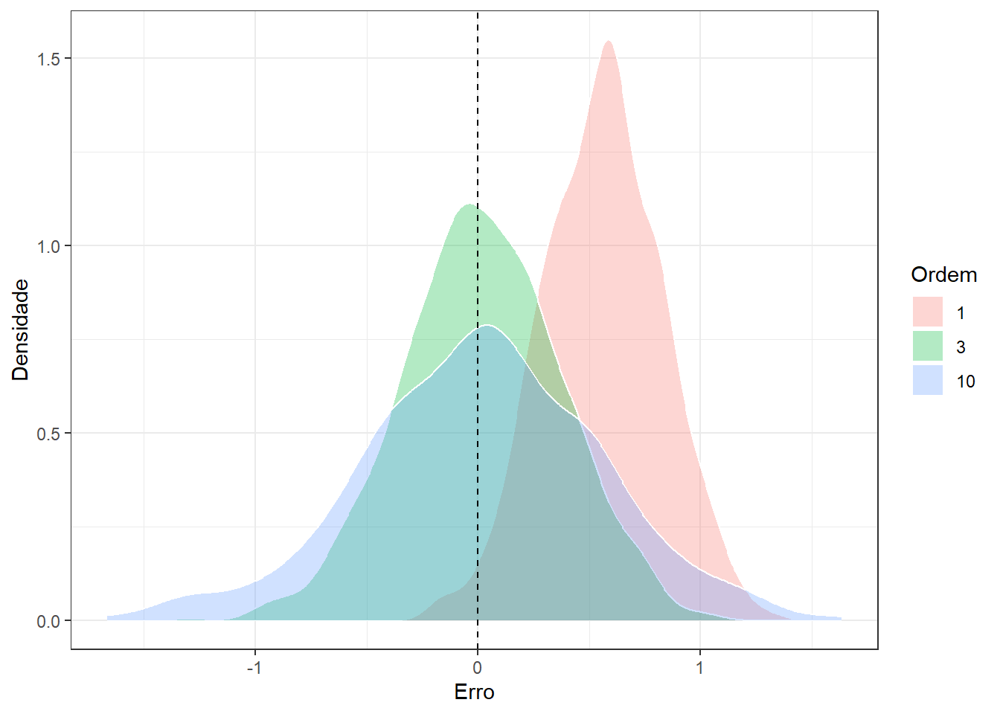
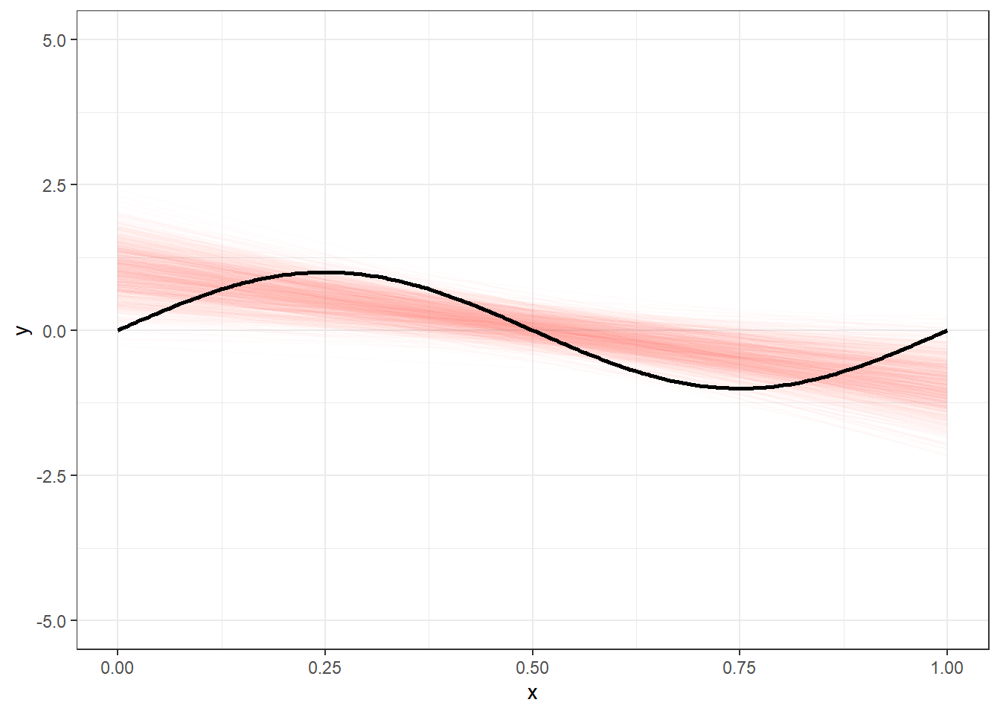
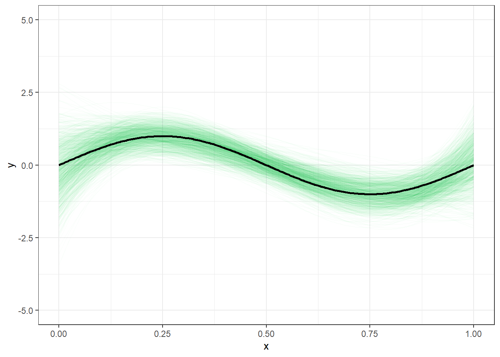
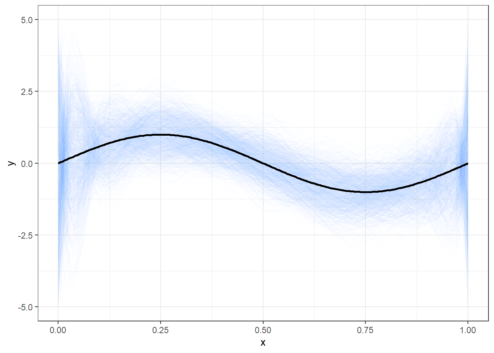
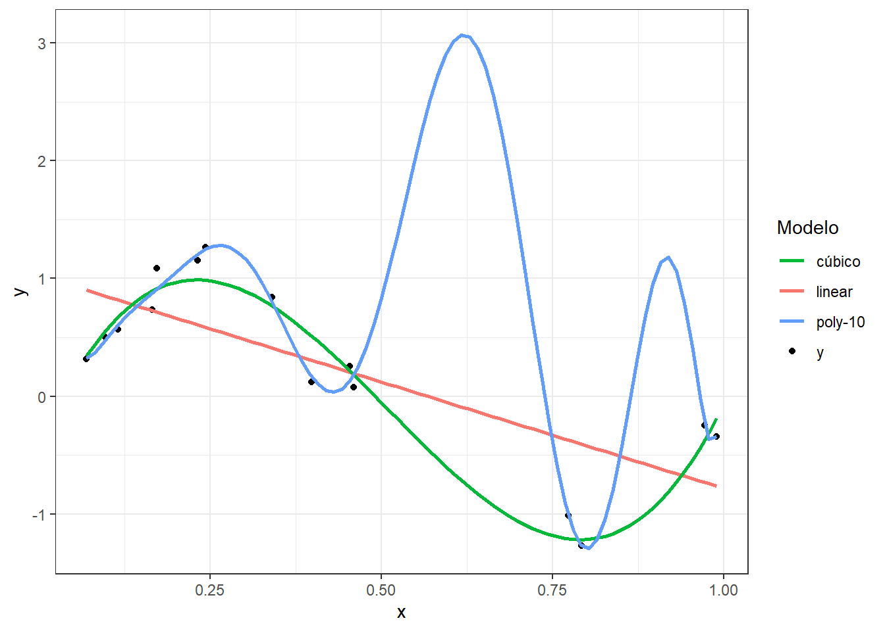
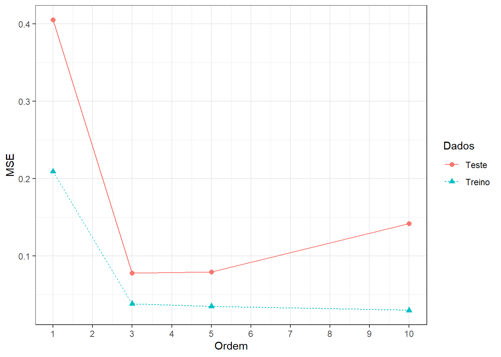
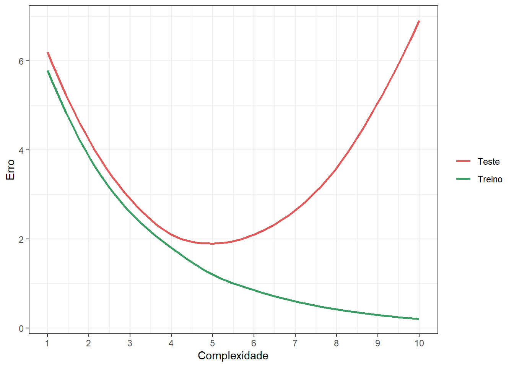

3 Conflito entre vício e variância no aprendizado supervisionado
3.1 Intuição e conflito entre vício e variância em problemas de regressão
Entender as fontes de variabilidade em aprendizado supervisionado é essencial para garantir capacidade de generalização satisfatória dos modelos, ou em outras palavras, adequação aos dados. Nem sempre o modelo mais complexo será o mais recomendado para um conjunto de dados arbitrário. Ao final deste capítulo é importante que o leitor entenda como a complexidade impacta o vício e a variância do modelo.
Seja um preditor \(x \in \mathbb{R}\) e uma resposta ou variável dependente igualmente medida em uma escala contínua, \(y \in \mathbb{R}\).
Deseja-se aproximar uma função desconhecida, \(f(x)\), que prevê \(y\) em função de \(x\). Tal aproximação pode ser feita minimizando uma função perda, \(L(y,f(x))\), que mede os erros de previsão.
Definição
Uma função perda mensura a diferença entre os valores previstos do modelo e as observações reais disponíveis. Tal função é otimizada durante o treinamento do modelo, de forma a garantir menor perda ou, em outras palavras, melhor aproximação do modelo em relação aos dados.
A função perda mais comum para problemas de regressão é a função perda quadrática, apresentada na Equação 3.1.
\[ L(y,f(x)) = (y-f(x))^2 \tag{3.1}\]
Seja um conjunto de dados disponível, \(d_1 = {(x_1,y_1), (x_2,y_2), ..., (x_n,y_n)}\), plotado na Figura 3.1. As observações da variável dependente, \(y\), podem ser descritas em relação à função desconhecida adicionada de um termo de erro, \(y = f(x) + \varepsilon\), \(E(\varepsilon)=0\), \(Var(\varepsilon) = \sigma^2_\varepsilon\). O erro das medições tem variância \(Var(\varepsilon) = \sigma^2_\varepsilon\) e consiste no erro irredutível. Este erro está associado à qualidade dos dados. Portanto, sua variabilidade terá implicação no erro do modelo estimado.
Seja um amplo número de conjuntos de dados distintos, \(\mathcal D_{treino}\), e tomados de forma independente da população de interesse, sendo iid, todos de tamanho \(n\). Para cada um destes podemos aplicar um algoritmo para obter uma aproximação \(\hat f_ \mathcal D(x)\). Obviamente cada conjunto de dados resultará em uma aproximação diferente, com perda distinta associada. Para medir o desempenho de um algoritmo ou método pode-se considerar a média de todos modelos obtidos via conjuntos de dados distintos.
Seja o erro quadrático de um modelo em relação à função desconhecida à qual se deseja aproximar.
\[ \{\hat f_D(x) - f(x)\}^2 \]
Seja a média de distintos modelos considerando distintos conjuntos de dados, \(E_D[\hat f_D(x)]\). Somando e subtraindo este termo dentro da perda quadrática, tem-se:
\[ \begin{align} \{\hat f_D(x) - f(x)\}^2 =& \{\hat f_D(x) - E_D[\hat f_D(x)] + E_D[\hat f_D(x)] - f(x)\}^2\\ \{\hat f_D(x) - f(x)\}^2 =& \{\underbrace{(\hat f_D(x) - E_D[\hat f_D(x)])}_\text{a} + \underbrace{(E_D[\hat f_D(x)] - f(x))}_\text{b}\}^2\\ \end{align} \]
Desenvolvendo o quadrado, tem-se:
\[ \begin{align} \{\hat f_D(x) - f(x)\}^2 = (\hat f_D(x) - E_D[\hat f_D(x)])^2 + 2(\hat f_D(x) - E_D[\hat f_D(x)])(E_D[\hat f_D(x)] - f(x)) + (E_D[\hat f_D(x)] - f(x))^2 \end{align} \]
Tomando a média (esperança, \(E\)) em relação ao conjuntos de dados, \(D\), o segundo termo se anulará, pois \(E_D \{\hat f_D(x) - E_D[\hat f_D] \}\)=0. Logo:
\[ E_D\{\hat f_D(x) - f(x)\}^2 = \underbrace{E_D\{\hat f_D(x) - E_D[\hat f_D(x)]\}^2}_\text{variância} + \underbrace{\{E_D[\hat f_D(x)] - f(x)\}^2}_\text{vício} \]
Agora considerando um valor específico de \(x\), \(x_0\), em detrimento dos conjuntos de dados \(D\), uma vez que \(E[\varepsilon]=0\), o vício pode ser obtido via Equação 3.2.
\[ \begin{aligned} Vicio_D[\hat f(x_0)] &= E_D[\hat f(x_0) - f(x_0)] = E_D[\hat f(x_0) - (y - \varepsilon)] \\ Vicio_D[\hat f(x_0)] &= E_D[\hat f(x_0)] - E_D[y] \end{aligned} \tag{3.2}\]
A variância, por sua vez, é obtida via Equação 3.3.
\[ \begin{aligned} Var_D[\hat f(x)] &= E_D[(\hat f_D(x) - E_D{\hat f(x)})^2] \end{aligned} \tag{3.3}\]
Seja o ajuste aos dados disponíveis de três modelos de regressão com distintas complexidades, um linear, um cúbico e um modelo polinomial de décima ordem.
Tais modelos são apresentados de forma genérica na Equação 3.4.
\[ \begin{align} \hat y_1 =& \beta_0 + \beta_1x\\ \hat y_3 =& \beta_0 + \beta_1x + \beta_2x^2 + \beta_3x^3\\ \hat y_{10} =& \beta_0 + \beta_1x + \beta_2x^2 + \beta_3x^3 + \beta_4x^4 + ... + \beta_{10}x^{10} \end{align} \tag{3.4}\]
Os modelos são estimados por mínimos quadrados e plotados com os dados na Figura 3.2.
Nota
O método de mínimos quadrados será abordado no Capítulo 3.

Tomando um valor arbitrário de \(x = x_0\), e \(M\) conjuntos distintos de observações futuras, \(d_1=(x_1,y_1)_1, ..., (x_n,y_n)_1\), \(d_2=(x_1,y_1)_2, ..., (x_n,y_n)_2\), \(\ldots, d_M=(x_1,y_1)_M, ..., (x_n,y_n)_M\), é possível medir o vício e a variância das estimativas obtidas por \(\hat f(x)\) para um \(x=x_0\) específico. A Figura 3.3 compara graficamente o resultado de tais modelos em observações futuras via boxplots, enquanto a Figura 3.4 faz a mesma comparação usando gráficos de densidade amostral. Pode-se observar que o modelo linear apresenta maior vício e menor variância, enquanto o modelo polinomial de décima ordem apresenta baixo vício, porém maior variância. Este exemplo ilustra o conflito entre vício e variância. Deve-se buscar um modelo que apresente equilíbrio entre ambas medidas.
Importante
Em geral, quanto mais complexo o modelo, menor o seu vício, entretanto maior sua variância.


A Tabela 3.1 apresenta valores de vício ao quadrado, enquanto a Tabela 3.2 apresenta valores de variância dos modelos segundo a ordem ou complexidade dos mesmos. Observa-se que o modelo de menor grau e, portanto, menor complexidade, apresenta alto vício, porém baixa variância. Já o modelo de maior grau, ou maior complexidade, apresenta baixo vício, porém alta variância.
| Ordem | Vício |
|---|---|
| 1 | 3.1e-01 |
| 3 | 2.1e-04 |
| 10 | 2.2e-04 |
| Ordem | Variância |
|---|---|
| 1 | 7.0e-02 |
| 3 | 1.3e-01 |
| 10 | 2.9e-01 |
A Figura 3.5 plota os 1000 modelos lineares obtidos com distintos conjuntos de dados em torno do modelo real. Pode-se observar que o conjunto de dados pode influenciar nos modelos e a média de diversos modelos lineares apresenta alto viés em relação ao modelo real desconhecido.

A Figura 3.6 plota os 1000 modelos cúbicos obtidos com distintos conjuntos de dados em torno do modelo real. Pode-se observar que o conjunto de dados pode influenciar nos modelos, mas a média de diversos modelos cúbicos certamente apresentará um bom equilíbrio entre vício e variância para estes dados.

Por fim, a Figura 3.7 plota os 1000 modelos polinomiais de décima ordem obtidos com distintos conjuntos de dados em torno do modelo real. Pode-se observar que o conjunto de dados pode influenciar nos modelos, a média de tais modelos é próxima do modelo desconhecido, porém observa-se alta variabilidade de tais modelos em comparação com os anteriores.

Em casos onde o número de observações é baixo, o conflito entre vício e variância pode ficar mais claro. Considerando o exemplo plotado na Figura 3.8, pode-se observar que, enquanto o modelo linear apresenta baixo ajuste, o modelo polinomial de décima ordem apresenta sobreajuste, uma vez que praticamente interpola os dados disponíveis. Este último apresenta, para os dados de treino, um ajuste muito além do real, uma vez que sua capacidade não se confirmará para dados futuros.

É comum plotar o erro do modelo em função da complexidade ou ordem do modelo para os dados de treino e teste. A Figura 3.9 apresenta o erro ou valor da função perda de modelos de primeira, terceira, quinta e décima ordem para dados de treino e dados de teste. Pode-se observar que, para os dados de treino, à medida que se aumenta a complexidade do modelo ajustado, o erro diminui. Entretanto, o mesmo não acontece para os dados futuros ou de teste do modelo.

Quando um modelo apresenta alto erro, tanto para os dados de treino quanto para os dados de teste, ele é considerado um modelo com baixo ajuste. Quando um modelo apresenta baixo erro para os dados de treino, mas alto erro para os dados de teste, ele é considerado um modelo com sobreajuste. É importante diagnosticar o sobreajuste uma vez que o bom ajuste aos dados de treino pode dar a ilusão de um modelo perfeito, porém, a avaliação do modelo em dados separados confirma a dificuldade de generalização deste tipo de modelo.
Definição
O sobreajuste ou overfitting consiste em uma alta capacidade de previsão para os dados de treino com concomitante baixa capacidade de previsão para os dados de teste, estando associado a modelos com alta variância.
O melhor modelo seria aquele que apresenta menor erro de teste que, no exemplo plotado na Figura 3.9, seria o de terceira ordem.
Referências
Bishop, Christopher M., and Hugh Bishop. “Deep learning: foundations and concepts.” (2024).
3.2 Exercícios
Defina sobreajuste ou overfitting e explique porque é crucial identificar e evitar modelos com este problema.
Entre o vício e a variância, qual está associado com o sobreajuste e qual com o baixo ajuste?
A curva da Figura 3.10 plota os erros de treino e teste segundo a ordem de com,plexidade do modelo. Identifique o modelo com melhor ajuste, os modelos com baixo ajuste e os modelos com sobreajuste.
